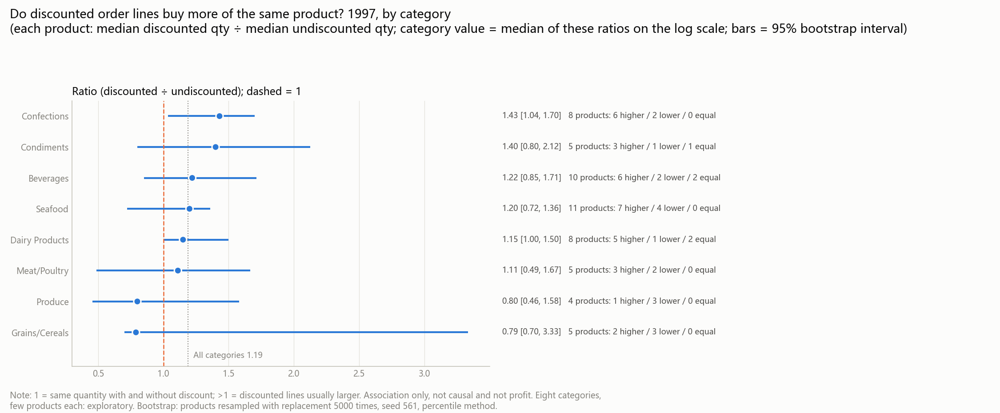
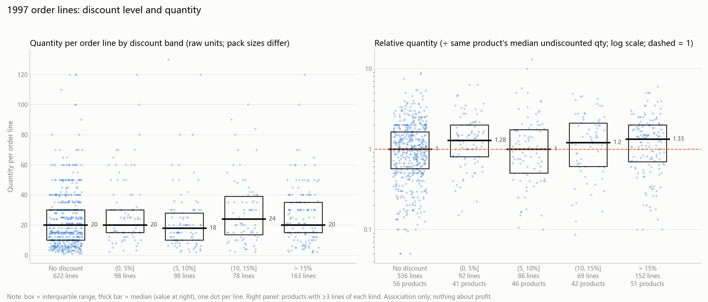

Q5 · How do quantity and sales differ by discount level?
Short answer
Within the same product, discounted order lines are usually somewhat larger: across 56 comparable products the summary ratio is 1.19 (95% interval 1.00–1.35). This summarises products; it does not mean every discounted line bought 19% more, and it does not show that discounts caused larger orders or improved profit.
Next step: treat Confections (the only category whose interval excludes 1) and Dairy Products (lower bound exactly 1.00) as candidates for a controlled discount test; the data does not support ranking one above the other.
Why it matters
Discounts cost money on every unit sold. If they do not go with larger purchases, they may be giving away revenue; where they do, those categories are the places to test discount policy properly before changing it.
Method
Data and period: all 1,059 order lines of 1997 (by order date), joined to Orders, Product and Categories. Each line is put into a discount band: none, (0, 5%], (5, 10%], (10, 15%], above 15%.
Because pack sizes differ between products, comparing raw quantities across products says little about demand. So the main comparison is within the same product: for each product with at least 3 discounted and 3 undiscounted lines, the median discounted quantity divided by the median undiscounted quantity. Each category is summarised by the median of these ratios on the log scale, with a 95% bootstrap interval over products.
Formulas, definitions and analysis choices
Band (on the discount rounded to 4 decimals): 0 | (0, 0.05] | (0.05, 0.10] | (0.10, 0.15] | > 0.15 Effective discount = Σ UnitPrice×Quantity×Discount / Σ UnitPrice×Quantity Relative quantity = Quantity / median undiscounted Quantity of the same product Product ratio = median discounted Quantity / median undiscounted Quantity Category value = exp(median over products of ln(product ratio))Rounding fixes single-precision storage (0.05 is stored as 0.0500000007); sales use the stored value. Intervals: resample products with replacement 5,000 times, take the median log ratio each time, use the 2.5th and 97.5th percentiles (percentile method), random seed 561.
16 reconciliation checks, all passed (q5_validation.csv).
Evidence

By category
| Category | Discounted lines | Effective discount | Comparable products | Lines (no discount / discount) | Higher / lower / equal | Median ratio [95% interval] |
|---|---|---|---|---|---|---|
| Confections | 73/171 | 5.2% | 8 | 87 / 60 | 6 / 2 / 0 | 1.43 [1.04, 1.70] |
| Condiments | 50/106 | 7.2% | 5 | 34 / 39 | 3 / 1 / 1 | 1.40 [0.80, 2.12] |
| Beverages | 70/176 | 5.9% | 10 | 93 / 68 | 6 / 2 / 2 | 1.22 [0.85, 1.71] |
| Seafood | 66/162 | 6.1% | 11 | 95 / 65 | 7 / 4 / 0 | 1.20 [0.72, 1.36] |
| Dairy Products | 74/182 | 6.9% | 8 | 91 / 70 | 5 / 1 / 2 | 1.15 [1.00, 1.50] |
| Meat/Poultry | 44/90 | 7.6% | 5 | 45 / 41 | 3 / 2 / 0 | 1.11 [0.49, 1.67] |
| Produce | 23/67 | 4.8% | 4 | 39 / 22 | 1 / 3 / 0 | 0.80 [0.46, 1.58] |
| Grains/Cereals | 37/105 | 6.0% | 5 | 52 / 34 | 2 / 3 / 0 | 0.79 [0.70, 3.33] |
| All categories | 437/1059 | 6.3% | 56 | 536 / 399 | 33 / 18 / 5 | 1.19 [1.00, 1.35] |
Category value = exp(median of ln(product ratio)). With an odd number of products this equals the ordinary median ratio; with an even number it is the geometric mean of the two middle ratios.
Findings
- Across discount bands, raw quantity per line looks similar (medians 18–24 units), with heavily overlapping quartiles; across products this mixes pack sizes, so it is background only.
- Within the same product, discounted lines are usually somewhat larger: across 56 comparable products the summary ratio is 1.19 (95% interval 1.00–1.35); 33 products are higher, 18 lower and 5 equal. The pattern does not rise steadily with discount depth (see the supplementary band table).
- Confections is the only category whose interval excludes 1 (1.43 [1.04, 1.70]). Dairy Products is borderline (1.15 [1.00, 1.50]). With eight categories compared at once and few products each, neither is proof that discounts work.
- Produce and Grains/Cereals show lower quantities on discounted lines, with very wide intervals.
Business interpretation and next steps
- Candidates for a controlled test (for example, randomise a discount among similar customers): Confections and Dairy Products. The current evidence does not justify an order of priority between them; a test would need comparable customers and enough orders per arm.
- Meat/Poultry has the highest effective discount rate but an inconclusive ratio: a candidate for testing whether smaller discounts change volume.
- Before testing, document how discounts were granted in 1997 (by customer?) and add cost data so margin can be judged.
These are candidate directions for further evaluation, not decisions the data can settle on its own.
Limitations and boundaries
- Association only: discounts were not assigned at random, so this does not show that discounts raise quantity, and it says nothing about profit.
- The within-product comparison removes pack-size differences but does not control for customer, order size, timing or price changes, which may move together with discounts.
- Eight categories with 4–11 comparable products each are compared at once; intervals are rough and the results are exploratory, for designing tests.
- The eligibility rule (at least 3 lines of each kind) is an analysis choice.
Supplementary material and downloads
Supplementary charts and tables

Discount bands (1997 order lines)
| Band | Lines | Unique orders* | Customers* | Quantity P25 / median / P75 | Gross sales | Net sales | Effective discount | Values in data |
|---|---|---|---|---|---|---|---|---|
| No discount | 622 | 290 | 83 | 10 / 20 / 30 | 375,480.32 | 375,480.32 | 0.00% | 0 |
| (0, 5%] | 98 | 47 | 31 | 15 / 20 / 30 | 66,726.34 | 63,390.02 | 5.00% | 0.05 |
| (5, 10%] | 98 | 40 | 30 | 10 / 18 / 28 | 50,739.41 | 45,665.47 | 10.00% | 0.1 |
| (10, 15%] | 78 | 35 | 23 | 13.5 / 24 / 39 | 53,993.95 | 45,894.86 | 15.00% | 0.15 |
| > 15% | 163 | 75 | 42 | 15 / 20 / 35 | 111,448.73 | 86,654.53 | 22.25% | 0.2, 0.25 |
| All lines | 1059 | 408 | 86 | 10 / 20 / 30 | 658,388.75 | 617,085.20 | 6.27% | 0, 0.05, 0.1, 0.15, 0.2, 0.25 |
* Orders and customers can appear in several bands (79 of 408 orders do), so band counts add up to 487, not 408. 53 of 86 customers received a discount at least once; 33 never did.
Relative quantity by band (same product)
| Band | Lines | Products | Relative quantity P25 / median / P75 |
|---|---|---|---|
| No discount | 536 | 56 | 0.57 / 1.00 / 1.63 |
| (0, 5%] | 92 | 41 | 0.80 / 1.28 / 2.00 |
| (5, 10%] | 86 | 46 | 0.50 / 1.00 / 1.74 |
| (10, 15%] | 69 | 42 | 0.61 / 1.20 / 2.10 |
| > 15% | 152 | 51 | 0.69 / 1.33 / 2.00 |
Download the full result tables (CSV)
- q5_category_discount_summary.csv — Category discount use and within-product ratios
- q5_discount_band_summary.csv — Discount-band table
- q5_lines_1997.csv — All 1,059 order lines of 1997 with bands
- q5_order_overlap.csv — Orders and customers across bands
- q5_relative_quantity_by_band.csv — Relative quantity by band
- q5_validation.csv — Reconciliation checks (expected, actual, pass)
- q5_within_product_comparison.csv — Per-product discounted vs undiscounted quantity
CSV files are UTF-8 with BOM; some headers are in Chinese.